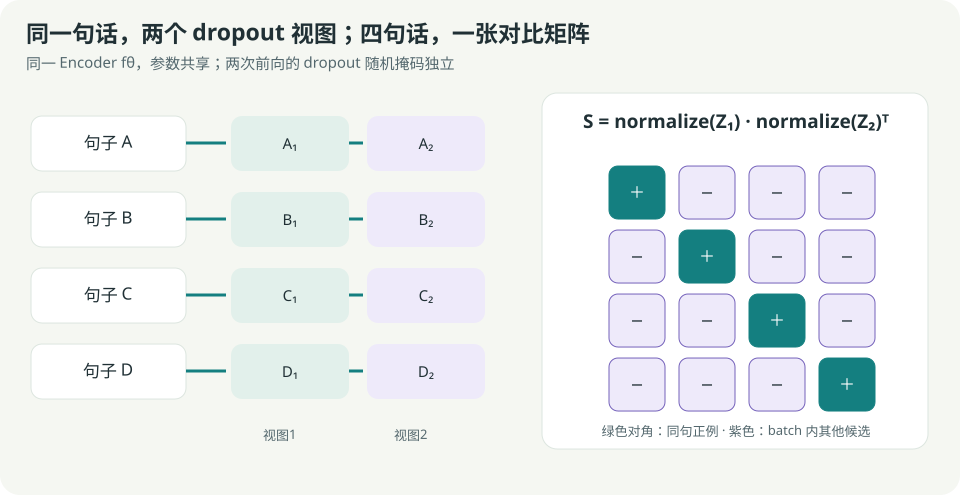
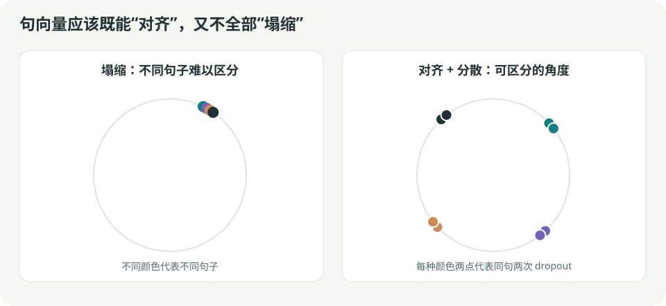

1. 预训练 Encoder 有词向量，为何句向量还不好用
BERT 输出每个 token 的 contextual hidden state，并不天然保证“两个语义相近句子”的 pooled 向量距离更近。把 CLS 或 token 平均池化成句向量可能出现方向高度集中、cosine 相似度难以区分等现象。做语义相似度（STS）和检索时，我们需要一个几何目标：同义句要靠近，不同含义的句子应占据足够可区分的位置。
SimCSE 用对比学习而非另一个 MLM head，直接训练句子的向量相对距离。它既有无监督路线，也有使用自然语言推理标注的监督路线，两者的正例与负例构造不能混写。

2. 两次前向不是相同向量的自我复制
无监督 SimCSE 对同一个文本 xᵢ 调用两次共享权重的 Encoder：hᵢ=fθ(xᵢ; m₁)，hᵢ⁺=fθ(xᵢ; m₂)。两个 dropout mask 不同，但句子的 token ID、padding mask、网络权重相同。它不是把同一句子作为“没有噪声的真复制”就直接算 cosine：如果 dropout 关闭且模型完全确定，两个输出相等，无法构建论文强调的 dropout perturbation 训练信号。
对于 B 个不同句子，每个句子提供一个 anchor 和一个 positive view。其他句子的正例视图构成 batch 内 negatives；它们只被假定是不相关的，若 batch 里恰好有同义句就会出现 false negative。大 batch 可以提供更多候选，但也可能放大这种冲突。
句子汇聚方式需要固定：SimCSE 论文实验比较 CLS before pooler、CLS with pooler、mean 等选择；训练时是否有额外 MLP pooler、推理时是否去掉它都要跟 checkpoint 配置一致。不要把所有 BERT 句向量接口都称作一个通用“CLS embedding”。
3. InfoNCE 的分母究竟包含哪些样本
定义 zᵢ 和 zᵢ⁺ 为归一化后的句向量；余弦相似度是它们的内积，τ>0 是温度。以 anchor i 为行，它与 batch 中 B 个候选 zⱼ⁺ 的相似度形成 logits；正确的候选是同一个句子的另一 dropout 视图 j=i：
这是论文无监督目标的单向概念写法；实现可能增加对称计算、不同的 batch 组织或分布式聚合。对于一行 logits [B]，交叉熵沿候选维（第二个视图的 batch 轴）归一化，不是沿 hidden dimension；归一化 cosine 向量之后才有点积等于 cosine 的关系。
温度越低，softmax 对当前更相近候选的相对概率越敏感，也越容易由难负例主导梯度。极低温度可能使数值与训练不稳定；真实代码应使用 logsumexp / 框架交叉熵计算，而不是直接累加巨大的指数。
4. 对齐与均匀：两个看似矛盾的几何目标
如果只让正例靠近，所有输入都塌缩到同一个向量便可取得“完美相似”；但是加入其他句子的负例后，所有向量若重合，各行的正负样本 logits 都一样，交叉熵不会成为好的训练结果。SimCSE 把alignment（正例距离小）与uniformity（表示充分覆盖单位超球面）相结合进行分析。
从直觉看，句向量的学习不是把所有句子推得越远越好：语义类似的不同句子也是我们最终希望靠近的，它们可能被无监督 batch 当作负例。uniformity 有限度地防止 collapse，但不能替代语义级评测。

5. 监督 SimCSE：蕴含是正例，矛盾是困难负例
监督版本使用自然语言推理（NLI）数据：premise 和 entailment hypothesis 是正例，contradiction hypothesis 被用作 hard negative。对 anchor 的候选集合，不仅有其他句对提供的跨样本负例，还有与这个 premise 语义上表面相关却标为矛盾的难负例。它比随机负例更容易具有高 cosine，需要模型真正区分语义方向与否定词。
这并不等于所有 NLI 的 neutral 都被当作强负例，也不等于一个事实上的“entailment”必然能作为双向可替代的语义同义句。监督 SimCSE 利用了 NLI 标注中的语义关系作为训练代理；最终是否适合检索还需考察领域与语种迁移。
一个实际例子：premise 是“猫坐在红色椅子上”，entailment 是“动物坐在椅子上”，contradiction 是“没有动物坐在椅子上”。即便正例间的信息粒度不完全等价，这些标签仍可为训练提供方向。真实中文模型如果使用英文 NLI 训练，再直接评价中文检索，不能假定其效果与中文同语种监督一致。
6. 从输入 IDs 到 N×N 对比分数表
假设 batch B、最大长度 T、Encoder 宽度 H。两次文本视图各得到 [B,T,H] hidden states，经 CLS 或 mean pooling 变为 [B,H]；按句向量最后一轴 L2-normalize，再形成跨视图 cosine matrix S=Z·Z⁺ᵀ，形状 [B,B]。监督版本如果额外有 B 个 contradiction embeddings，那么 logits 可以组合正例候选和 hard negatives，最终候选轴规模随实现变化。
公式把右侧 Z 理解为“另一独立 dropout 视图对应的归一化矩阵”，并非必须与左侧元素数值相同。注意对于分布式训练，全局负例汇总会影响有效 batch 数和梯度；如果每张卡只看本地负例，实验不能与论文大 batch 训练直接比较。
7. STS Spearman、检索 Recall@K 和分类 Accuracy 是三件事
STS 将句对的语义相似度人工打分与模型 cosine 排序做 Spearman 相关；这不是分类 accuracy，也不是一个检索数据集上的 Recall@10。SimCSE 原论文报告无监督与监督 BERT-base 在七个标准英文 STS 数据集上的平均 Spearman 相关为 76.3% 和 81.6%（论文 abstract 精度），应保留模型、设置、数据集集合和平均方式，不能写成“所有任务准确率 81.6%”。
如果用于向量数据库，实际还必须分别测 top-k recall、nDCG、候选集合规模、负例难度、向量维度、ANN 索引误差和数据泄漏。训练数据中同一文本或近重复句子如果同时出现在 dev/test，会使结论失真。
8. 交互一：谁是 anchor 的正例
一行 N×N 对比矩阵
同批四句 A、B、C、D，各生成两个 dropout 视图。假设以 A₁ 为 anchor，矩阵行只包含第二视图 A₂/B₂/C₂/D₂。
A₁ 的正例：同一句 A 的独立 dropout 视图 A₂。 其他句 B₂、C₂、D₂ 构成 batch 内负例。 如果 A 与 B 意思相近，这一负例选择可能是 false negative。
9. 交互二：温度如何改变相同 logits 的分布
教学 logits：[2, 1, 0]，第一项为正例
只计算 softmax 概率与负对数损失；不是 SimCSE 训练后的真实相似度。为便于手算，输入 logits 不限于 cosine [−1,1] 范围。
τ=1，softmax([2,1,0]) ≈ [0.665, 0.245, 0.090]。 正例概率 ≈ 0.665，损失 −log(p) ≈ 0.408。 对同一排序，温度变小会强化概率差距。
10. 何时 SimCSE 不是最合适的方案
如果你的任务是无标注大规模语义检索，无监督 SimCSE 可以是一个起点，但 batch 内 negatives 的分布需要贴近线上误检；如果有可靠正例对，可以考虑监督或领域特化的对比训练。不要把训练时的 cosine 高低与线上 ANN 的最终召回混同。
如果 Encoder 从来没见过目标语言或专业术语，dropout view 只在一个句子的表示附近加噪声，不能神奇补出缺少的领域知识。还要警惕短句中否定词、日期、数字、实体名称被句向量平均化后丢失。
关键结论
- 无监督 SimCSE 使用同一句话两次独立 dropout 得到正例；监督版本由 NLI 蕴含与矛盾构建正例和难负例。
- InfoNCE 在候选句向量 batch 维计算 softmax；温度不是可以跨实验无条件复制的常数。
- 对齐与均匀共同影响表示几何；跨论文比较 STS Spearman、检索召回与分类准确率必须区分。
原始论文与代码
- Gao et al., SimCSE，§3–5, Figure 1, STS tables。
- SimCSE preprint，Eq. 1–2, §3。
- SimCSE 官方仓库，README, unsup/sup pipeline。
- Wang & Isola, alignment/uniformity，alignment/uniformity framework。